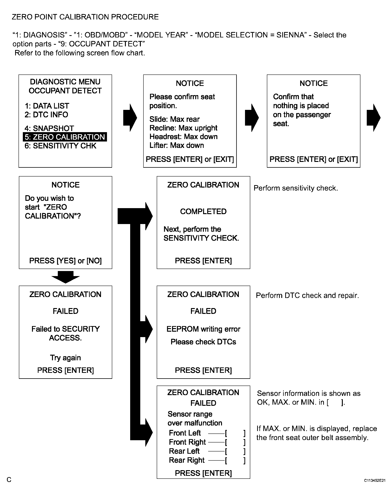

Occupant Classification System: Initialization
- ZERO POINT CALIBRATION NOTE: Make sure that the front passenger seat is not occupied before performing the operation.
HINT:
Perform the zero point calibration and sensitivity check if any of the following conditions occur.
- The occupant classification ECU is replaced.
- Accessories (seatback tray, seat cover, etc.) are installed.
- The front passenger seat is removed from the vehicle.
- The passenger airbag ON / OFF indicator ("OFF") comes on when the front passenger seat is not occupied.
- The vehicle is brought to the workshop for repair due to an accident or a collision.
- Zero point calibration and sensitivity check procedures
HINT:
Make sure that zero point calibration has finished normally, and then perform the sensitivity check.
- Adjust the seat position according to the table below.ADJUSTMENT COMPONENT - POSITION
Adjustment Component Position Slide Direction Rearmost position Reclining Angle Upright position Headrest Height Lowest position Lifter Height Lowest position - Connect the intelligent tester (with CAN VIM) to the DLC3.
- Turn the ignition switch ON.
- Perform the zero point calibration by following the prompts on the tester screen.

Courtesy of © TOYOTA, LICENSE AGREEMENT TMS1002HINT:
Refer to the intelligent tester operator's manual for further details.
OK:
"COMPLETED" is displayed.
- Perform the sensitivity check by following the prompts on the tester screen.
- Confirm that the beginning sensor reading is within the standard range.
Standard value:
-3.2 to 3.2 kg (-7 to 7 lb)
- Place a 30 kg (66.14 lb) weight (e.g. a 30 kg (66.14 lb) of lead) onto the front passenger seat.
- Confirm that the sensitivity is within the standard range.
Standard value:
27 to 33 kg (59.52 to 72.75 lb)
HINT:
- When performing the sensitivity check, use a solid metal weight (the check result may not appear properly if a liquid weight is used).
- If the sensitivity deviates from the standard range, retighten the bolts of the front passenger seat taking care not to deform the seat rail. After performing this procedure, if the sensitivity is not within the standard range, replace the front seat RH.
- If zero point calibration has not finished normally, replace the front seat RH.
- Adjust the seat position according to the table below.